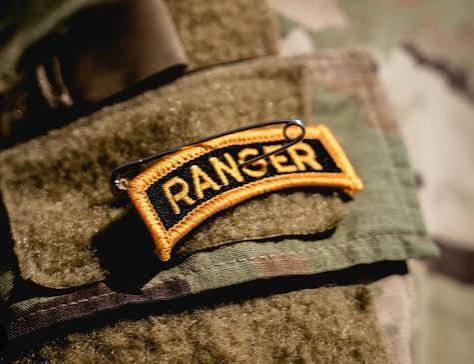

If you pass the rigorous selection process, you will be granted the prestine tan baret. This is a symbol that you have made it into the elite special operations group But this is just the beginning of your journey as an Army Ranger.

There are two main paths to becoming an Army Ranger:

If you pass the rigorous selection process, you will be granted the prestine tan baret. This is a symbol that you have made it into the elite special operations group But this is just the beginning of your journey as an Army Ranger.
After being assigned to a Ranger unit, you will first, after proving yourself, attend the Ranger School (A 62 day grueling program acrss mountains, jungles, and deserts) where you will receive a Ranger Tab. This tab makes you a full-fledged ranger, and you will continue to receive advanced training and participate in various missions and operations. You will have the opportunity to specialize in different areas, such as airborne operations, reconnaissance, or sniper training. The training and experiences you gain as an Army Ranger will prepare you for a successful career in the military and beyond.

Thank you for visiting my website! Visit my professors website here and my class website here!